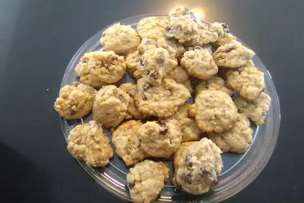

Cookies

One of Grandma Dorothy's much sought-after recipes is for Dad's cookies. These oatmeal cookies are wonderfully
chewy and are made with oil instead of butter or margarine, appealing to the health-conscious. One cookie is
never enough!
Ingredients (for 36 servings)
- 1 ½ cups all-purpose flour
- 1 teaspoon baking soda
- ¾ teaspoon salt
- 1 cup white sugar
- 1 cup brown sugar
- 1 ½ cups rolled oats
- ½ cup flaked coconut
- ¾ cup vegetable oil
- 2 eggs
- 1 teaspoon vanilla extract
Directions
-
Preheat the oven to 350 degrees F (175 degrees C). Grease cookie sheets.
-
Stir together flour, baking soda, salt, white sugar, brown sugar, oats, and coconut in a large bowl. Make a
well in the center and pour in oil, eggs, and vanilla. Mix well using your hands or a wooden spoon.
-
Roll dough into walnut-sized balls and place 2 inches apart onto the prepared cookie sheets. Flatten
slightly with a fork.
-
Bake in the preheated oven until very light brown and chewy, 10 to 12 minutes. Let cool briefly on the
baking sheets before removing to wire racks to cool completely.